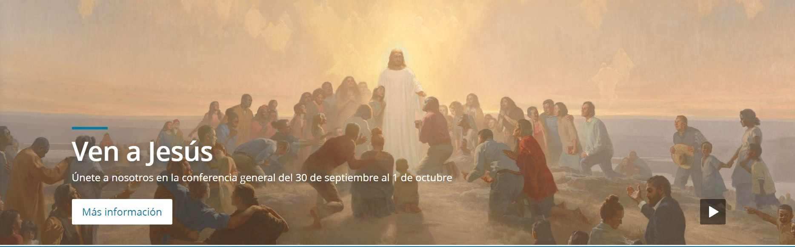

Visual Hierarchy
Toyota
https://www.toyota.com/Visual hierarchy is a pattern in the visual field wherein some elements tend to "stand out," or attract attention, more strongly than other elements, suggesting a hierarchy of importance. While it may occur naturally in any visual field, the term is most commonly used in design, where elements are intentionally designed to make some look more important than others. When you enter the website you will be able to see a first instance of one of these images where it shows a large advertisement for the car as the highlight with other secondary images to the main car. By scrolling down you can to see the different functions of the page.
Rule of Thirds
Zikloland
https://www.zikloland.com/canyon-endurace-cf-slx-disc-8-0-di2-test-comodidad-sin-limites/The rule of thirds is a method used to divide images or graphics into nine thirds by creating an evenly spaced grid with three columns and three rows. Designers can create or imagine these guidelines to organize the elements of their design. The asymmetry created when composing an image according to the rule of thirds is what makes it most striking. In the example, being closer to one of the edges, the eyes follow it. This creates a sensation of movement.
PARC: Alignment
LDS
https://www.churchofjesuschrist.org/?lang=spa When page elements are close to each other, we call it visual unity. Visual units create less clutter on a page and give structure to the information displayed. It also means that information is more likely to be assimilated and remembered when it is in a related visual unit. For example, in the image, the presentation information is displayed in the lower left margin. You will see that the title, a brief information and the link are in one unit, while the button to view a series of images is in the lower left corner.